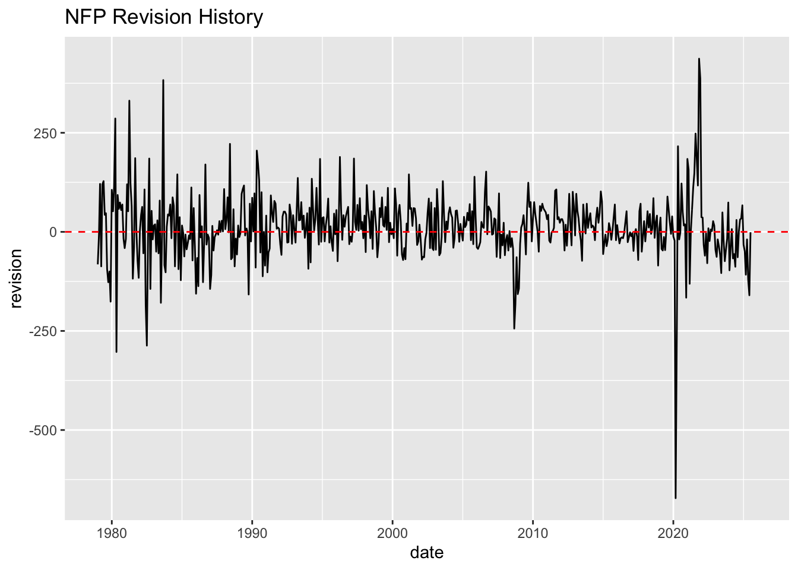
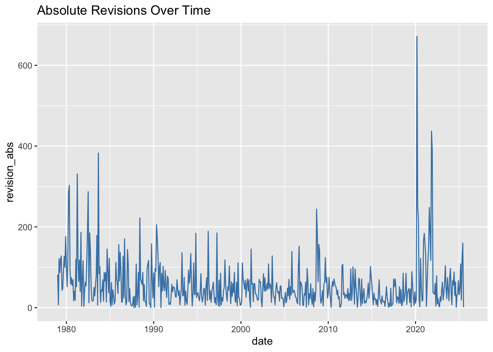
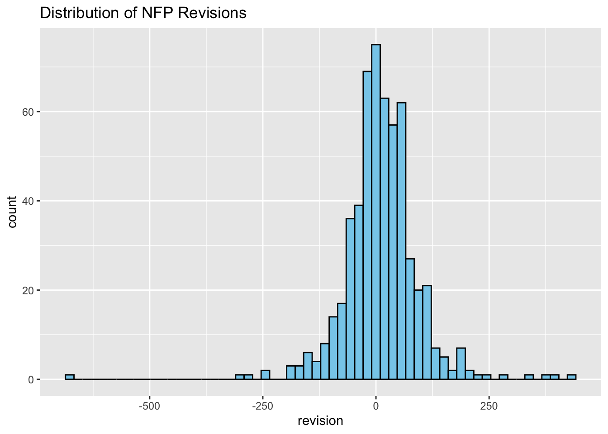
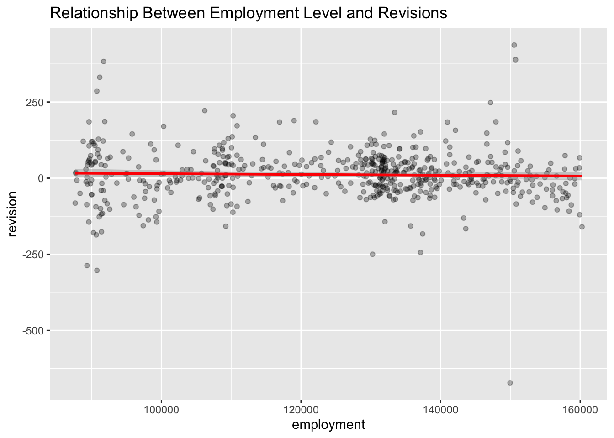

Show Code
# Import Libraries
library(httr2)
library(rvest)
library(dplyr)
library(tidyr)
library(lubridate)
library(DT)
library(ggplot2)
library(infer)
library(purrr)Trends within NFP revisions
Akashdeep Singh
When looking at the economic data calendar, often one of the most important day of a given month is the first Friday of the month. This day is referred to as NFP-day, otherwise known as Non-farm Payrolls jobs number. This statistic many times leads to large scale financial market swings and sets the sentiment for the coming weeks.
Recently due to large revisions of this number, revisions downwards specifically,the Commissioner of Labor Statistics was fired. The aim of this project lies in the analysis of the non-farm payroll number overall and whether the firing of the commissioner is justified from a purely fact check basis.
The first part of this project requires us to pull the data from the BLS website and parse that data into a usable table. To do this we extract the date from the BLS website using the following code:
# List off all the criteria we have to get
req <- request("https://data.bls.gov/pdq/SurveyOutputServlet") |>
req_method("POST") |>
req_body_form(
survey = "ce",
table = "1",
format = "0",
year = "0",
periods = "0",
seasonality = "S",
data_type = "ALL",
rows = "0",
columns = "0",
series_id = "CEU0000000001",
from_year = "1979",
to_year = "2025"
)
# pull the request and put it into a table
resp <- req |> req_perform()
html <- resp |> resp_body_html()
tables <- html |> html_elements("table")
ces_tbl <- tables[[2]] |> html_table(fill = TRUE)
# take off the extra row at the bottom
clean_raw_NFP<-slice(.data=ces_tbl,-48)
#View(clean_raw_NFP)
datatable(head(clean_raw_NFP))As we can see from the output the monthly jobs report number is extracted successfully. We see the data from 1979-current day.
Next we wish to extract the revision data also from the BLS webpage.
#Query request
req_rev <- request("https://www.bls.gov") |>
req_url_path("web", "empsit", "cesnaicsrev.htm") |>
req_headers(
`User-Agent` = "Mozilla/5.0 (Macintosh; Intel Mac OS X 10.15; rv:143.0) Gecko/20100101 Firefox/143.0"
) |>
req_retry(max_tries = 5)
html_rev <- req_rev |> req_perform() |> resp_body_html()
tables <- html_rev |> html_elements("table")
ids <- tables |> html_attr("id")
# define years
year_ids <- ids[grepl("^[0-9]{4}$", ids)] |> as.integer()
get_raw_year <- function(year) {
html_rev |>
html_element(paste0("#", year)) |>
html_table(header = FALSE, fill = TRUE)
}
raw_tables <- map(year_ids, get_raw_year)
names(raw_tables) <- year_ids
#Apply cleaning
clean_one <- function(raw_tbl, year) {
raw_tbl |>
slice(4:15) |>
select(
month = 1,
year_col = 2,
original = 3,
final = 5
) |>
mutate(
original = gsub("\\(P\\)", "", original),
final = gsub("\\(P\\)", "", final),
original = na_if(original, "—"),
final = na_if(final, "—"),
original = as.numeric(original),
final = as.numeric(final),
date = ym(paste(year, month)),
revision = final - original
) |>
select(date, original, final, revision)
}
#Apply functions and cleaning to all years
cleaned <- map2(raw_tables, year_ids, clean_one)
ces_revisions <- bind_rows(cleaned)
# Final Output
#ces_revisions
datatable(head(ces_revisions))As we can see the monthly revisions as well as the inital numbers are side by side in the new dataset. We are ready to use the data to both analyze and make inferences.
First to get a better understanding of our data we will merge the tables:
By matching the 2 tables to have a joinable link we can then merge the tables together.The final table we receive is show below:
Clean_final2_NFP <- Clean_final_NFP |>
inner_join(ces_revisions, by = "date")
datatable(head(Clean_final2_NFP))From here we can begin to calculate some statistics to help summarize our data and give us some insights into possible trends.
Clean_final2_NFP<- Clean_final2_NFP |>
mutate(
employment=as.numeric(employment),
revision_abs = abs(revision),
revision_pct = revision / employment,
year = year(date),
month_num = month(date),
decade = floor(year / 10) * 10
)Warning: There was 1 warning in `mutate()`.
ℹ In argument: `employment = as.numeric(employment)`.
Caused by warning:
! NAs introduced by coercionstats <- tibble(
`mean revision` = mean(Clean_final2_NFP$revision, na.rm = TRUE),
`median revision` = median(Clean_final2_NFP$revision, na.rm = TRUE),
`sd revision` = sd(Clean_final2_NFP$revision, na.rm = TRUE),
`max revision` = max(Clean_final2_NFP$revision, na.rm = TRUE),
`min revision` = min(Clean_final2_NFP$revision, na.rm = TRUE),
`negative as fraction` = mean(Clean_final2_NFP$revision < 0, na.rm = TRUE)
)
#stats
datatable(head(stats))From the stats above we can see the normal stats such as mean, median max etc, but an interesting piece of data we can pull from this source is also the amount of revise downs as a fraction of the total revisions.
To help visualize the data we can create plots of certain helpful graphics. Starting with a revisions time series plot.

From this plot we can see that although the revisions have been consistently negative for quite a while, this trend does appear historically. especially with times that coincide with recessions.

We see from the absolute revisions graph that the amount of revisions high or low have been consistantly passing the 100k mark over history. When we take into account that the mean revisions since 1979 is ~11, this shows us the the positive and negative revisions end up balancing out in terms of magnitude as well.

We take this one step further by actually plotting the distribution of the revisions and can see that our observation was justified.

We also see that there is no clear visual relationship of the magnitude of the NFP number on the amount of the revision.
One Sample t-test
data: Clean_final2_NFP$revision
t = 3.2588, df = 558, p-value = 0.001187
alternative hypothesis: true mean is not equal to 0
95 percent confidence interval:
4.558826 18.392874
sample estimates:
mean of x
11.47585 This T test shows that the NFP data shows revisions are significantly positive - on average, values are revised upward by about 11.48 units. This is not due to random chance (p = 0.001), meaning there’s a systematic pattern of positive revisions in the historical data.
Paired t-test
data: Clean_final2_NFP$revision and Clean_final2_NFP$employment
t = -147.05, df = 558, p-value < 2.2e-16
alternative hypothesis: true mean difference is not equal to 0
95 percent confidence interval:
-126421.9 -123089.1
sample estimates:
mean difference
-124755.5 Moreover doing the 2 sample t test between NFP magnitude and revision for the month, we see that these numbers look hard to interpret. However on average this mean difference of about 124k tells us that the difference between the magnitude of NFP and revisions is very high. We see that the large majority of the values of the jobs number has been below 200k constantly. Meaning revisions are not a huge number usually.
## Task 5
Public controversy over the firing of former BLS Commissioner Erika McEntarfer has led to several high-profile claims about the validity of CES employment revisions. Two of the most widely circulated assertions come from Donald J. Trump and Senator Rick Scott, both of whom suggested that the BLS intentionally manipulated job figures for political reasons.Trump stated that the BLS “rigged the jobs numbers before the election and later revised them down by almost 900,000 jobs.” Senator Scott similarly claimed that the BLS “inflated job reports to help Democrats, then quietly corrected them after voters weren’t looking.” Both statements directly imply systemic, partisan bias in the monthly CES revision process.Using our merged CES revision dataset from 1979–2025, the evidence does not support these claims. Historical statistics show that the mean monthly revision is approximately +11 jobs, with a median near zero, suggesting that revisions fluctuate around no directional bias. The fraction of downward revisions, while nontrivial, is not historically abnormal and does not increase meaningfully in recent years. Moreover, the standard deviation of revisions—combined with our time-series visualization—demonstrates that large corrections occur during economic turning points, not around elections.
Our visual analyses reinforce this. The revision time-series plot displays alternating upward and downward adjustments across decades, while the histogram of revisions shows a symmetric distribution centered near zero. These patterns contradict the claim of deliberate overstatement followed by “quiet corrections.” A scatterplot comparing NFP employment levels to revision magnitudes further reveals no statistical relationship, undermining theories of systematic inflation tied to job size.A formal one-sample t-test confirms that revisions differ from zero on average, but the estimated effect is small and positive—not reflective of politically motivated downward corrections. Importantly, the highly publicized “900,000-job revision” referenced by Trump stems from an annual benchmark update, not the monthly revision process.Taken together, the data show no evidence of manipulation. Trump’s and Senator Scott’s claims rate “Mostly False” to “Pants-on-Fire.”